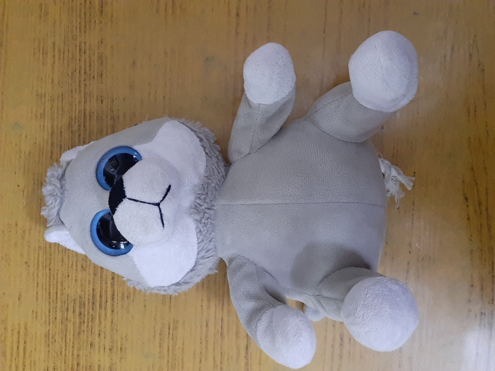
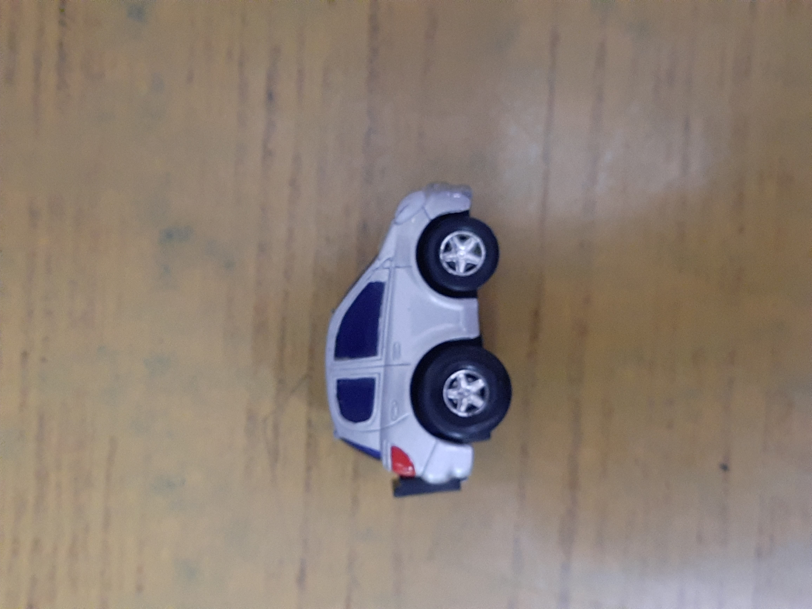
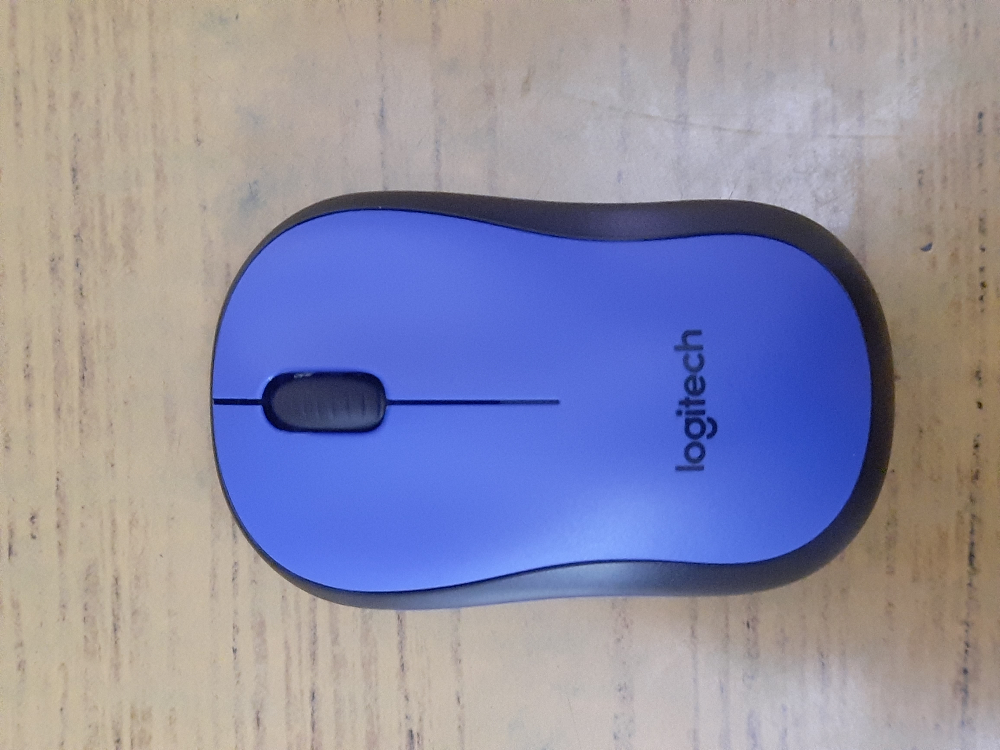
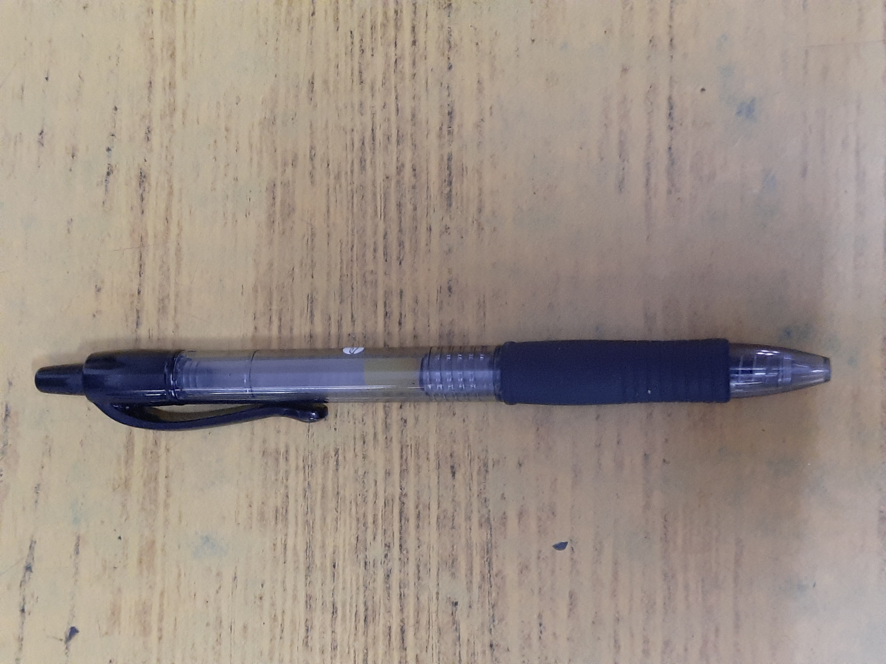
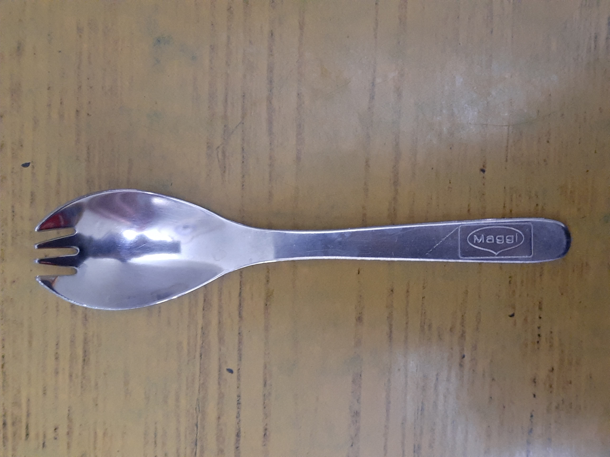

Case Study
1. 𝓘𝓶𝓪𝓰𝓮

Output on Google Lens - Feisty Pets
Output on mobile net - Teddy, Teddy bear
Results - mobile net is more accurate
2. 𝓘𝓶𝓪𝓰𝓮

Output on Google lens - Yaris Zoomie model
Output on mobile net - Race car
Results - Google Lens is more accurate
3. 𝓘𝓶𝓪𝓰𝓮

Output on Google Lens - Logitech M220 silent
Output on mobile net - Mouse, computer mouse
Results - Google lens is more accurate
4. 𝓘𝓶𝓪𝓰𝓮

Output on Google lens - Pilot G2
Output on mobile net - Ballpoint,Ballpoint
Results - Google lens is more accurate
5. 𝓘𝓶𝓪𝓰𝓮

Output on Google Lens - German Eating Spoon
Output on mobile net - ladle
Results - Mobile net is more accurate
𝕯𝖊𝖛𝖊𝖑𝖔𝖕𝖊𝖉 𝖇𝖞 - 𝕲𝖚𝖗𝖒𝖆𝖓 𝕾𝖎𝖓𝖌𝖍©